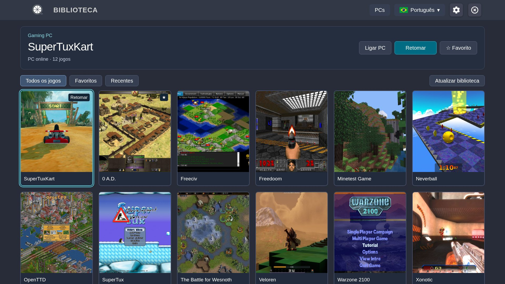
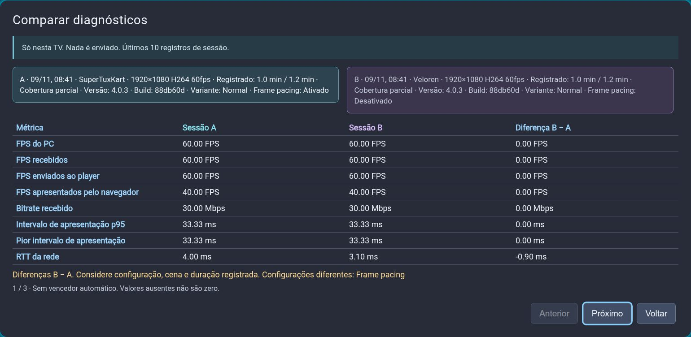

JOGOS DE PC. CONFORTO DE SALA.
Seus jogos.
Em tela grande.
Leve sua biblioteca do PC para a TV Samsung. Escolha o jogo, pegue o controle e fique à vontade.

DA MESA PARA O SOFÁ
Três passos até a próxima partida.
Um PC, uma TV compatível e um controle. A gente mostra o caminho.
ENTENDA SUA TRANSMISSÃO
Uma boa configuração começa com boas respostas.
Ative estatísticas quando precisar. Consulte as dez últimas sessões, compare quaisquer duas e veja o que mudou.
Conheça o diagnóstico localSó na sua TV. Nada é enviado.

MENOS DÚVIDAS. MAIS JOGO.
Seu próximo passo está aqui.
Instalar e atualizar
Escolha o pacote, prepare a TV e preserve seus ajustes ao atualizar.
PC e pareamento
Configure o host uma vez. O pareamento conecta sua TV ao computador certo.
Jogar e menu do jogo
Inicie uma partida, retome depois e escolha exatamente como sair.
Configurações
Seis categorias, com o efeito de cada opção por perto.
Mapeamento dos controles
Remapeie comandos do jogo, confira botões físicos e ajuste analógicos sem mudar a navegação dos menus.
Diagnóstico local
Ative quando precisar, consulte na TV e compare sessões com contexto.
Resolver problemas
Comece pelo sintoma. Mude uma coisa e confira o resultado.
Sobre e referências
VibeLight é um fork do Moonlight Tizen para transmitir jogos do PC às TVs Samsung.